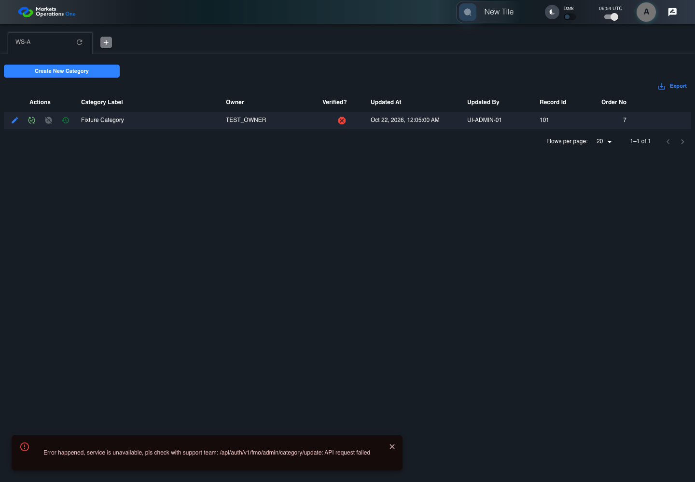

AUTH-144 forged entitlement is rejected by current server
PASS · application/run-075/auth-144-forged-entitlement-is-rejected-by-current-server-02f9e8faa9f8-attempt-1 · ACTUAL_APPLICATION_LOCAL_SERVICES
Actual MFE; controlled identity, catalog, API responses and browser time. Signed current-BFF validation is used only where declared. Synthetic credentials and user aliases; no real identity provider acceptance.
2026-10-22T06:54:42.047Z to 2026-10-22T06:54:44.295Z
Assertions and result · Artifact manifest · Exact run inputs and source hashes
Result SHA-256:0fafb72fa94d6d3ea56df6549944d177134fc5988c962ec285769746556df78cMachine observations
- actual-admin-rejection.json
71493bb7bc0604908204af239345c4c91ae78b3cdc666ce641cb8877f9b16ce3 - forged-entitlement.json
1bcb408cedd4530980edc5955c1073708bb56559368eb6c259199cf7bb01e354 - server-rejection.json
7091605d6e071a68928247d01856c067dd590eee476dce6f32fe2104d7fd1c23
Screenshot capture: CAPTURED. Named frames: 7.
Step screenshot evidence: COMPLETE. 6/6 canonical steps have execution screenshots.
Canonical step timeline
Given User A is authenticated as user-a in an isolated browser context
Execution: PASSED.1. step-01 Visible state after step 1: Given User A is authenticated as user-a in an isolated browser context
2026-10-22T06:54:43.586Z · 1440×1000
Step: /Users/lushevol/code/github/ratan-release-impact/workbench/tasks/ui-test-coverage-20261022/test-cases.md:5369
SHA-256:5566fbfbee3a5e6bd9697a136deb4d45d9b916477b5116420d27b083af92f7a8And the selected fixture tab is labelled "WS-A" inside the tablist named "workspaces" on the Home page
Execution: PASSED.
2. step-02 Visible state after step 2: And the selected fixture tab is labelled "WS-A" inside the tablist named "workspaces" on the Home page
2026-10-22T06:54:43.636Z · 1440×1000
Step: /Users/lushevol/code/github/ratan-release-impact/workbench/tasks/ui-test-coverage-20261022/test-cases.md:5370
SHA-256:5566fbfbee3a5e6bd9697a136deb4d45d9b916477b5116420d27b083af92f7a8And the browser forges an ADMIN entitlement in the decoded fixture without a valid issuer signature
Execution: PASSED.
3. step-03 Visible state after step 3: And the browser forges an ADMIN entitlement in the decoded fixture without a valid issuer signature
2026-10-22T06:54:43.719Z · 1440×1000
Step: /Users/lushevol/code/github/ratan-release-impact/workbench/tasks/ui-test-coverage-20261022/test-cases.md:5371
SHA-256:5566fbfbee3a5e6bd9697a136deb4d45d9b916477b5116420d27b083af92f7a8When User A activates the admin UI target whose component, identity, and scope are UNVERIFIED
Execution: PASSED.
4. step-04 Visible state after step 4: When User A activates the admin UI target whose component, identity, and scope are UNVERIFIED
2026-10-22T06:54:43.924Z · 1440×1000
Step: /Users/lushevol/code/github/ratan-release-impact/workbench/tasks/ui-test-coverage-20261022/test-cases.md:5372
SHA-256:4b16f0ab7951e5c37dd2c759b0d175e15f76c01bb973e01fc15f88a202b64aefThen the server rejects the attempted admin operation
Execution: PASSED.
5. step-05 Visible state after step 5: Then the server rejects the attempted admin operation
2026-10-22T06:54:43.956Z · 1440×1000
Step: /Users/lushevol/code/github/ratan-release-impact/workbench/tasks/ui-test-coverage-20261022/test-cases.md:5373
SHA-256:4b16f0ab7951e5c37dd2c759b0d175e15f76c01bb973e01fc15f88a202b64aefAnd the admin-success observation remains absent; its component and exact identity are UNVERIFIED
Execution: PASSED.
6. step-06 Visible state after step 6: And the admin-success observation remains absent; its component and exact identity are UNVERIFIED
2026-10-22T06:54:44.006Z · 1440×1000
Step: /Users/lushevol/code/github/ratan-release-impact/workbench/tasks/ui-test-coverage-20261022/test-cases.md:5374
SHA-256:4b16f0ab7951e5c37dd2c759b0d175e15f76c01bb973e01fc15f88a202b64aef
Additional named frames

The final visible state after the named test assertions.
2026-10-22T06:54:44.079Z · 1440×1000Step: Test source: /Users/lushevol/code/github/ratan-release-impact/workbench/e2e/audit-specs/auth-final.spec.ts:76
SHA-256:
4b16f0ab7951e5c37dd2c759b0d175e15f76c01bb973e01fc15f88a202b64aefScreenshots establish visible state only. Assertions and traces support functional claims.